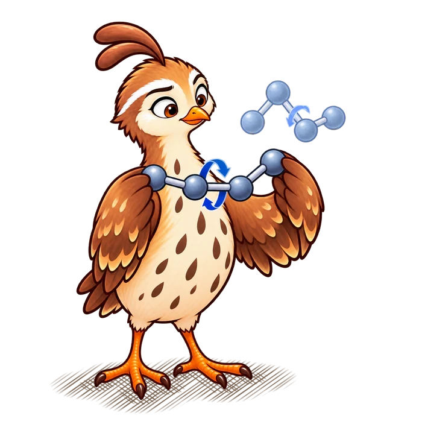

Конформеры: какие минимумы искать
Оптимизация находит ближайший минимум — тот, к которому «скатилась» стартовая структура. Но у гибкой молекулы минимумов много: вращение вокруг каждой одинарной связи даёт свои конформеры, и при комнатной температуре они быстро переходят друг в друга. Здесь видно, откуда берутся минимумы, как распределяются молекулы между ними и почему их ищут метадинамикой, а не перебором.
Что нужно понять
- Энергия вращения вокруг связи периодична: у этана три одинаковых минимума с барьером 12 кДж/моль, у бутана — анти и два гош-конформера на 3–4 кДж/моль выше.
- Доля конформера при температуре T пропорциональна exp(−E/RT): при 298 K разница 5,7 кДж/моль — это соотношение 10 : 1.
- Свойства, которые измеряют в опыте (спектры, дипольный момент, энергия), — средние по конформерам; одного минимума может не хватить.
- С каждой вращаемой связью число комбинаций умножается на число её минимумов: перебор растёт как kⁿ, поэтому CREST исследует поверхность метадинамикой.
Границы модели: одна торсия, жёсткий остов, энергии вместо энергий Гиббса
- Что вычисляется
- Профиль энергии вращения вокруг одной связи по трём фурье-членам, его минимумы и барьеры; доли конформеров по Больцману; число стартов и время перебора по сетке.
- Какие приближения приняты
- Остальная молекула жёсткая; параметры V₁–V₃ модельные (у бутана подобраны под типичные гош +3,6 и барьеры 14 и 21 кДж/моль); доли — по электронным энергиям, без нулевых колебаний и энтропии, каждый минимум считается отдельно.
- Какой вывод можно сделать
- Откуда берутся конформеры, как их доли зависят от энергий и температуры и почему нужен умный поиск — да; точные доли требуют энергий Гиббса конформеров из расчёта (CREST + DFT).
Вращение вокруг связи
V(φ) = ½V₁(1 + cos φ) + ½V₂(1 − cos 2φ) + ½V₃(1 + cos 3φ); φ = 180° — анти. Числа над максимумами — барьеры.
Заселённости при температуре
Почему перебор не работает
Проверьте свои знания
Задания по странице: выполните действие на странице и выберите ответ — он проверится сразу.
Бутан при 298 K: какая доля молекул в анти-конформации?
Доля анти
Этан: сколько минимумов и как распределены молекулы?
10 вращаемых связей по 3 минимума: сколько стартовых структур у полного перебора?
Стартов
Какое энергетическое окно оставляет CREST (CREGEN) по умолчанию?